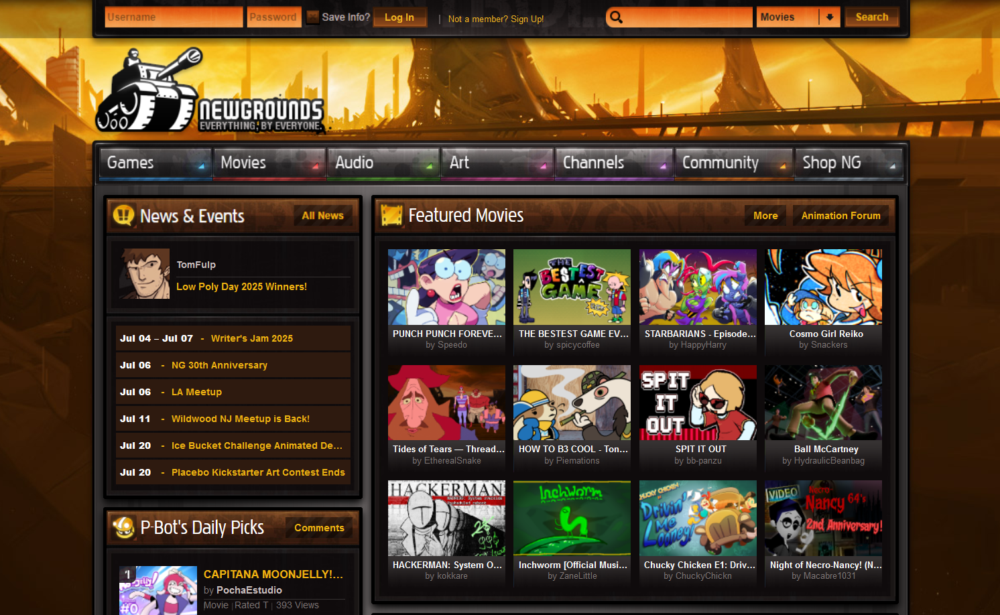
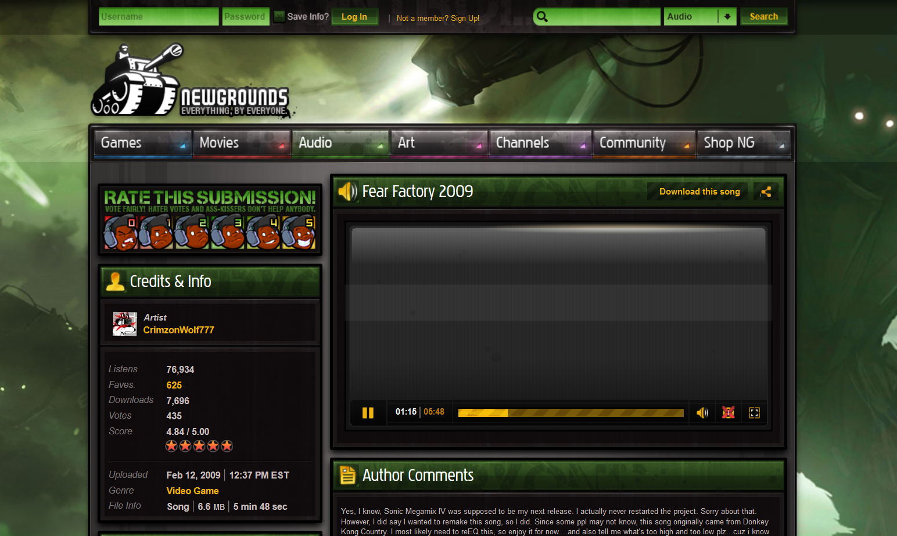

Welcome
NG12 (abbreviation for Newgrounds 2012) is a Userstyle that tries restoring with CSS the Newgrounds layouts from 2012, all the way up to 2014 (will go up to 2017 later).


- - - NG12 is not affiliated in any way with Newgrounds.